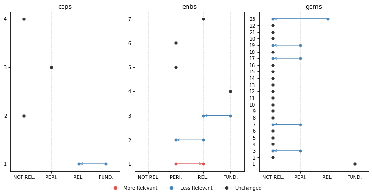
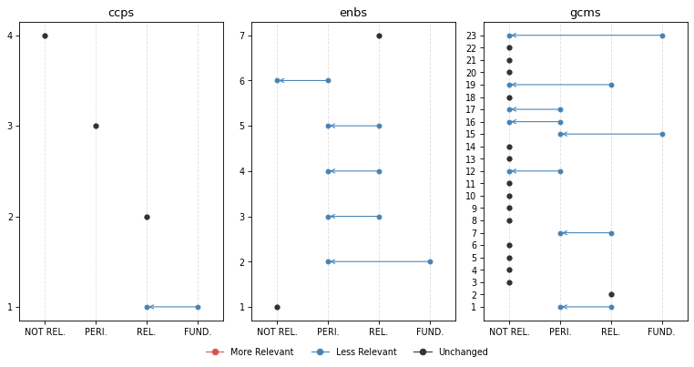
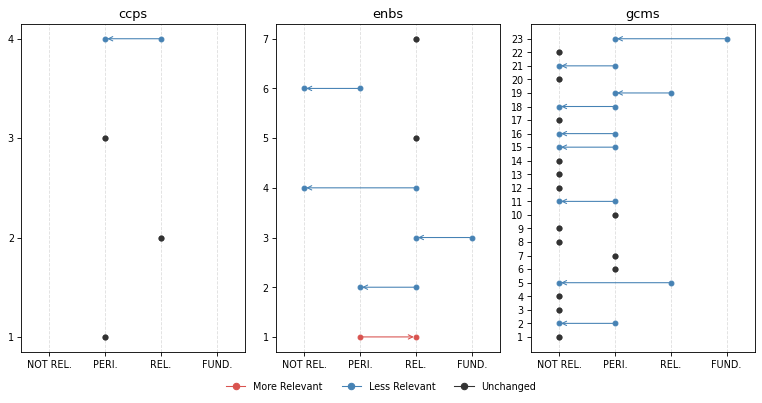

from iomeval.llm_eval.changes import *
from fastcore.all import *
from iomeval.readers import load_evals
from pathlib import PathChange Analysis
Click here to access the IOM TAGGING (BETA) PLATFORM
p = Path().home() / 'iomeval/data/requester_by_report_id.json'
lut = p.read_json()
evls_test = L(lut.keys())
ROOT_PATH = Path.home() / 'iomeval'
DATA_PATH = ROOT_PATH / 'data'
RESULTS_PATH = DATA_PATH/ 'results'
EVALS_PATH = ROOT_PATH / 'nbs/files/test/evaluations.json'
# Contains latest backed up data before new deployment
LATEST_TAG_PATH = Path.home() / 'tagapp/backups/20260311_115159/data'
evals = load_evals(EVALS_PATH)dfs = all_deltas(evls_test, RESULTS_PATH, LATEST_TAG_PATH)who = set(lut.values())
who{'Andres', 'Davide', 'elma', 'ljeoma', 'pip', 'rogers'}# Automatically generate changes report cells for all reports
rpts = [k for k,v in lut.items() if v=='pip']
for rpt in rpts: await gen_report_cells(rpt, dfs, LATEST_TAG_PATH, RESULTS_PATH)What we have changed?
- First of all, we improved the consistency of what section of an evaluation report the model reads. A “curation” step was added to the process in which a human selects the sections of the report that are more relevant to the tagging. This step used to be automatic (it was based on the “parsing” prompt that you reviewed) but we realized that several mistakes were being made by the model (probably because of the diversity in formatting and structure of evaluation reports, which not always follow a precise template). This is a major change with likely general consequences on the tagging. Feedback from testers on which sections of the report should be fed to the model was considered.
Secondly, we made changes to the tagging prompts based on your feedback. Here are the main modifications (minor ones are not listed here but are available in the files used for the review):
Excerpt-based analysis clarification: Following the point above on the new report “curation” step, we asked the model to be explicit on the fact that only specific section are accessed (executive summary, introduction, background, evaluation scope, conclusions, recommendations, lessons learnt) in order not to give a false impression that the full report was being fed to the model. Hedged language is required throughout (e.g., “the excerpts suggest …”, “based on the sections reviewed …”). This follows up on comments from several testers - some asking more precise quotation outputs (something not possible at this stage - sorry!). The reasoning now is more transparent on the fact that the model is not reading the whole report (like a human would do when tagging; remember also that in earlier experiments, feeding the whole report to the model was inflating scores throughout and making the model unusable).
GCM 23 downgrading: Added an important note on GCM Objective 23 clarifying its revised scoring treatment. This follows up on feedback from different testers suggesting that relevance with respect to this objective may have been exaggerated by the model.
SRF enablers reframing: Introduced a critical distinction between enablers as institutional capacity versus programmatic tools. This follows up on a point raised by Pip.
Relevance score range relabelling: Tags now use “Not Relevant”, “Peripheral” (formerly “Supplementary”), “Relevant”, and “Fundamental”. This follows up on suggestion from Andres.
Terminology warning on “Findings” — Analysts must not use “finding(s)” in their own analytical language, as this term carries a specific formal meaning in IOM evaluation reports. It may only be referenced when it appears in report excerpts themselves. This clarification stems from Andres flagging overly broad or imprecise uses of “findings” generated by the LLM.
GCM descriptions added: The description of the GCM objective used by the model is now fully in line with the GCM UN resolution document. This is something we realized upon auditing the script. For instance:
# Objective 1
## Title: Collect and utilize accurate and disaggregated data as a basis for evidence-based policies
We commit to strengthen the global evidence base on international migration by improving and investing in the collection, analysis and dissemination of accurate , ...
To realize this commitment, we will draw from the following actions:
## Associated actions
- a. Elaborate and implement ...
- b. ...
...Here are links to new and previous versions of the prompts.
How did these changes affect tagging?
Score changes overview
Based on all reports tagged so far (20). This is to give you a general sense of how the behavior of the model changed.
GCM objectives
Note: You might be unfamiliar with this type of visualization. It’s called a violin plot. A violin plot combines a box plot with a smoothed estimate of the score distribution, making it easier to spot not just the median and spread, but also whether scores cluster around one or several values, something a box plot alone would miss.
plot_score_diffs(dfs, 'gcms', 'GCM objective', figsize=(12, 6), dpi=77)
SRF Enablers
plot_score_diffs(dfs, 'enbs', 'SRF Enablers', figsize=(8, 3), dpi=77)
SRF Cross-Cutting Priorities
plot_score_diffs(dfs, 'ccps', 'SRF Cross-Cutting Priorities', figsize=(8, 3), dpi=77)
Rank changes overview
Among all themes where previous relevance score was > 0.83 (FUNDAMENTAL), what percentage of them have undergone a change in rank (rank_diff != 0)
dfs[dfs.score_old > 0.83].groupby('mapping_type').apply(lambda x: 100 * (x.rank_diff != 0).sum() / len(x)).round(1).sort_values()mapping_type
ccps 16.7
gcms 34.3
outs 40.7
enbs 44.4
dtype: float64Our interpretation
The score changes overview charts show a general decrease of the scores. In other words, the model became more conservative following the various changes made to the prompts.
The reduction in scores is more pronounced and generalized for GCM objectives, possibly due to the additional details on GCM objectives (change 7 above) that now the model has access to. However, the reductions yet remain moderate in magnitude, suggesting the prompt revisions recalibrated the model’s behaviour without disrupting it fundamentally. The dramatic average score reduction for GCM objective 23 is something intended. It means that the changes to the prompt worked, although your feedback will say if further calibration is needed.
SRF Enablers showed the highest rank instability (44.4%). This is also expected due to their reframing in the prompt (change 4).
CCPs were relatively unaffected by the changes in terms of average scores and ranking, which is consistent with the fact that none of the changes specifically targeted CCP scoring logic.
Caveat: the current general analysis is based on 20 reports only. Patterns, especially for the objectives less covered by our sample of reports, should be interpreted with caution.
Inputs we need from you
- Do you agree with the overall interpretation of the changes?
- Do you find the new behaviour to be improved?
- Please check, in the reports you asked us to tag, how the new behaviour has changed the items classified as fundamental. Do you find that accuracy and sensitivity have improved? Do you find the new reasonings better?
Per evaluation report
REMINDER, our “RELEVANCE SCORE FRAMEWORK” is as follows: - score >= 0.84: FUNDAMENTAL - 0.66 <= score < 0.83: RELEVANT - 0.34 <= score < 0.66: PERIPHERAL - score < 0.34: NOT RELEVANT
EVALUATION OF IOM’S MIGRATION DATA STRATEGY
plot_band_changes(dfs[dfs.evl_id == '9992310969aa2f428bc8aba29f865cf3'], figsize=(10, 5), dpi=77)
Fundamental Themes | | Mapping | Theme | Score | |—|—|—|—| | old | ccps | 1: Integrity, Transparency and Accountability | 0.88 | | old | enbs | 3: Funding | 0.88 | | old | enbs | 4: Data and evidence | 0.96 | | old | gcms | 1: Collect and utilize accurate and disaggregated data as a basis for evidence-based policies | 0.96 | | new | enbs | 4: Data and evidence | 0.92 | | new | gcms | 1: Collect and utilize accurate and disaggregated data as a basis for evidence-based policies | 0.95 |
⬇️ No Longer Fundamental
CCPS 1: Integrity, Transparency and Accountability
| score_old | score_new | rank_old | rank_new | rank_diff |
|---|---|---|---|---|
| 0.88 | 0.72 | 1 | 1 | 0 |
Reasoning (old)
This report would likely be essential for a synthesis on Cross-cutting Priority 1 (Integrity, Transparency and Accountability). The evaluation explicitly examines IOM’s Migration Data Strategy implementation, with accountability mechanisms—or their absence—as a central finding. Multiple findings directly address the lack of monitoring systems, unclear responsibilities, and absence of progress tracking for the MDS (Findings 4, 8). The report dedicates substantial analysis to governance gaps, noting ‘no robust system to track MDS progress or enforce its use’ and ‘no single point of accountability.’ Key conclusions (5, 6) emphasize that the MDS ‘was never actively managed or championed’ and lacked ‘unified data governance.’ Recommendations 2 and 7 specifically call for establishing ‘clear internal leadership and governance’ and ‘concrete implementation road map with assigned responsibilities and monitoring indicators’—directly addressing accountability system strengthening. For a synthesis specialist, the detailed analysis of governance failures in Findings 4 and 8, Conclusions 5-6, and the accountability-focused Recommendations 2 and 7 would be particularly valuable. This provides direct evidence on IOM’s organizational accountability challenges in strategic implementation and offers insights into systemic transparency and monitoring gaps across the institution.Reasoning (new)
Based on the excerpts reviewed, this report would likely contribute meaningful evidence to a synthesis on Cross-cutting Priority 1 (Integrity, Transparency and Accountability). The evaluation of the IOM Migration Data Strategy 2020–2025 appears to substantively examine accountability and transparency mechanisms — or more precisely, their absence — as a recurring analytical thread throughout the report. The excerpts suggest that the lack of monitoring systems, unclear lines of responsibility, and absence of performance indicators are treated as core implementation failures of the MDS, not merely contextual observations. Conclusions 5 and 7 explicitly address the absence of accountability structures and the lack of active management of the strategy, while Recommendation 7 directly calls for concrete implementation roadmaps with assigned responsibilities and monitoring indicators. The executive summary also highlights that the MDS ‘lacked any monitoring or accountability system’ as a key effectiveness concern. These elements appear to engage directly with IOM’s institutional commitment to measuring progress against clearly defined goals, facilitating transparent discussions about results, and taking corrective actions — all central to Cross-cutting Priority 1. However, the report’s primary focus is on data governance and migration data strategy implementation rather than on organizational integrity or accountability systems as standalone institutional commitments. The accountability dimension surfaces as an explanatory factor for strategic underperformance rather than as the central evaluand. A synthesis specialist would likely want to review the Conclusions section (particularly Conclusions 5, 7, and 16) and Recommendations 2 and 7, which appear most directly relevant to accountability and transparency practices. The excerpts I accessed suggest this is a secondary but substantive theme, making it a useful — if not essential — source for a synthesis on this Priority.ENBS 3: Funding
| score_old | score_new | rank_old | rank_new | rank_diff |
|---|---|---|---|---|
| 0.88 | 0.78 | 2 | 2 | 0 |
Reasoning (old)
This report would likely be essential for a synthesis on Funding. The evaluation explicitly examines IOM’s funding model for data initiatives as a primary constraint on strategy implementation, with funding challenges appearing prominently throughout findings, conclusions, and recommendations. Conclusion 9 directly states that ‘inadequate and fragmented funding seriously constrained the implementation of the MDS,’ analyzing how reliance on short-term project funds proved incompatible with strategic goals. Finding 13 and Conclusion 11 provide detailed analysis of sustainability risks stemming from the funding model, noting that ‘IOM’s key data programs are typically financed by specific donors on fixed-term grants’ with ‘minimal core budget commitment.’ The report examines resource mobilization challenges, the absence of pooled funding mechanisms, and member state funding patterns (Conclusion 12). Recommendation 4 explicitly addresses securing dedicated and sustainable funding through core budget allocation, pooled funds, or donor trust funds. For a synthesis specialist, the analysis of funding constraints in Findings 13 and 15, the sustainability discussion in Conclusions 11-12, and the detailed funding recommendations would provide direct evidence on IOM’s organizational funding capacities and structural financial challenges. The executive summary’s identification of ‘funding and capacity gaps’ as a key conclusion further underscores this theme’s centrality.Reasoning (new)
Based on the excerpts reviewed, this report would likely contribute meaningful evidence to a synthesis on Enabler 3 (Funding). The evaluation appears to examine IOM’s funding model as an organizational capacity constraint — not merely as contextual background for a specific programme. The excerpts suggest substantive institutional-level analysis of how IOM’s reliance on short-term, fragmented project funding undermined the implementation of a strategic initiative. Conclusion 9 explicitly addresses how ‘inadequate and fragmented funding seriously constrained the implementation of the MDS,’ and Conclusions 11 and 12 examine the sustainability risks posed by the absence of multi-year funding mechanisms and member state financial commitments. Recommendation 4 calls for creating ‘dedicated budget lines or pooled donor funding mechanisms’ — framing this as an organization-wide structural challenge. The lessons learned section similarly identifies the absence of a dedicated budget and reliance on short-term grants as key barriers. This analysis appears to go beyond mentioning funding as context: it examines IOM’s funding architecture as an institutional capacity that either enables or constrains strategic implementation. A synthesis specialist focused on IOM’s Funding Enabler would likely want to review Conclusions 9, 11, and 12, Recommendation 4, and the efficiency and sustainability sections. The excerpts suggest this report could contribute evidence on IOM’s challenges in securing flexible, multi-year funding and the institutional consequences of projectized financing — though the full report may contain additional relevant content beyond what the excerpts reveal.INTER-AGENCY HUMANITARIAN EVALUATION OF THE RESPONSE TO THE HUMANITARIAN CRISIS IN SOMALIA
plot_band_changes(dfs[dfs.evl_id == 'e21305a89aeb76fafa8f4270392d463a'], figsize=(10, 5), dpi=77)
Fundamental Themes | | Mapping | Theme | Score | |—|—|—|—| | old | ccps | 1: Integrity, Transparency and Accountability | 0.88 | | old | enbs | 2: Partnership | 0.88 | | old | gcms | 15: Provide access to basic services for migrants | 0.88 | | old | gcms | 23: Strengthen international cooperation and global partnerships for safe, orderly and regular migration | 0.92 |
⬇️ No Longer Fundamental
CCPS 1: Integrity, Transparency and Accountability
| score_old | score_new | rank_old | rank_new | rank_diff |
|---|---|---|---|---|
| 0.88 | 0.72 | 1 | 1 | 0 |
Reasoning (old)
This report would likely be essential for a synthesis on Cross-cutting Priority 1 (Integrity, Transparency and Accountability). The evaluation explicitly examines accountability mechanisms in Somalia’s humanitarian response, with accountability to affected people (AAP) appearing as a primary evaluation question (EQ 1.3) and a dedicated major finding. The report provides substantial analysis of feedback mechanisms, transparency in coordination, data reliability, and follow-up to recommendations—all directly addressing accountability commitments. Key findings reveal critical gaps: 65% of people who provided feedback received no response, limited transparency in resource allocation (with ‘UN-confidential’ as the second largest funding recipient), and lack of systematic follow-up to recurring evaluation recommendations. The executive summary explicitly states ‘The response lacked accountability’ as a major conclusion. Recommendation 4 is entirely dedicated to strengthening accountability through transparency, engagement of affected people, and systematic follow-up mechanisms. For a synthesis specialist, the detailed analysis of feedback mechanism effectiveness (Section 3.1.3, Finding 16), the assessment of coordination transparency and data reliability (Section 4.2), and the comprehensive accountability recommendation would be particularly valuable. This report provides direct evidence on humanitarian system accountability gaps and proposes concrete reform measures, making it core evidence for understanding accountability implementation challenges in complex humanitarian contexts.Reasoning (new)
Based on the excerpts reviewed, this report would likely contribute meaningful evidence to a synthesis on Cross-cutting Priority 1 (Integrity, Transparency and Accountability). The evaluation appears to dedicate substantive analysis to accountability mechanisms, transparency of the humanitarian response, and systemic follow-up to recurring recommendations — themes that map closely onto this institutional commitment area. The excerpts suggest that accountability to affected people (AAP) is one of the evaluation’s explicit sub-questions (EQ 1.3), and the executive summary and conclusions sections devote considerable space to the inadequacy of feedback mechanisms, the lack of transparency in decision-making, and the absence of systematic follow-up to prior evaluation recommendations. Recommendation 4 explicitly calls for ‘making the humanitarian response more accountable’ through increased transparency, streamlined feedback mechanisms, and systematic follow-up — all of which touch on accountability and transparency practices. The aid diversion reform process (Recommendation 6 and EQ 5) also engages with integrity-related themes, including risk management, beneficiary registration integrity, and data-sharing transparency. However, it is important to note that this is not an IOM-specific evaluation — it covers the collective IASC response in Somalia — so the evidence it provides on IOM’s own institutional implementation of accountability and transparency commitments may be limited or indirect. A synthesis specialist would likely want to review the sections on AAP (Section 2.3 equivalent), the conclusions on lack of accountability (para. 259), and Recommendation 4, while keeping in mind that the institutional actor is the broader humanitarian system rather than IOM specifically. The excerpts I accessed suggest this is a relevant but not fundamental source for this Priority.ENBS 2: Partnership
| score_old | score_new | rank_old | rank_new | rank_diff |
|---|---|---|---|---|
| 0.88 | 0.55 | 1 | 3 | -2 |
Reasoning (old)
This report would likely be essential for a synthesis on Partnership. The evaluation explicitly examines partnership dynamics in humanitarian response, with substantial analysis of relationships between international organizations, national/local NGOs, government entities, and affected communities—directly addressing organizational partnership capacities. Multiple findings assess partnership quality: the report analyzes localization efforts (noting local/national NGOs received 60-70% of Somalia Humanitarian Fund allocations), challenges in direct funding to local partners, trust dynamics between international and local actors, and the role of national organizations in reaching hard-to-reach areas. The executive summary dedicates significant space to partnership outcomes, noting progress in strengthening local organizations’ roles in coordination bodies while acknowledging persistent challenges in securing direct funding. Key recommendations explicitly address partnership equity and localization (Recommendation 5). For a synthesis specialist, the analysis of localization challenges in Section 3.4.6, findings on trust between international and local actors (Figure 1 shows affected people’s trust preferences), and the discussion of multi-stakeholder task forces for reform (Recommendation 6) would be particularly valuable. This provides direct evidence on humanitarian partnership models and organizational capacity for equitable partnership development.Reasoning (new)
The excerpts reviewed contain content that is partially relevant to the Partnership Enabler, though it requires careful interpretation. The evaluation addresses localisation — the role of national and local organizations in the humanitarian response — with some substantive analysis. The excerpts note that local and national organizations have strengthened their roles in coordination and decision-making bodies, face challenges in securing direct funding, and played key roles in hard-to-reach areas. Recommendation 5 explicitly addresses continuing and expanding support for local organizations. However, this is an evaluation of the collective inter-agency humanitarian response in Somalia, not an evaluation of IOM’s partnership frameworks as an organizational capacity. The partnership-related content describes the broader humanitarian system’s approach to localisation rather than IOM’s institutional partnership practices, equity frameworks, or network-building capacities. A synthesis specialist focused on IOM’s Partnership Enabler might find some peripheral evidence here — particularly around localisation dynamics and the tensions between international and local actors — but should note that the institutional framing is absent and IOM is not the primary subject. This is a case of scraping the barrel if evidence on localisation and partnership equity is scarce from other sources.GCMS 15: Provide access to basic services for migrants
| score_old | score_new | rank_old | rank_new | rank_diff |
|---|---|---|---|---|
| 0.88 | 0.58 | 2 | 3 | -1 |
Reasoning (old)
This report would likely be essential evidence for a synthesis on GCM Objective 15. Access to basic services is a central theme throughout the evaluation. The report extensively analyzes the delivery of prioritized services (food security, health, nutrition, WASH) to affected populations, with detailed findings on sectoral coverage and gaps. Finding 12-14 document critical gaps in WASH services despite prioritization, noting that ‘the WASH cluster lagged behind the other priority sectors throughout 2022’ with demonstrable health impacts. The evaluation presents data showing differential reach across sectors (Figure 2) and discusses integrated service delivery (Finding 24). Finding 15 addresses service provision to people in hard-to-reach areas. The report also examines inclusion and non-discrimination in service access (Findings 17-19), relating to Action 15a. While the context is humanitarian emergency response rather than routine service provision to migrants, the analysis of service delivery challenges, coordination mechanisms, sectoral gaps, and inclusion barriers would be highly valuable for a synthesis on basic service access. For synthesis specialists, the sections on sectoral priorities and gaps (paras 12-14, Figure 2), integrated response (para 24), and inclusion (paras 17-19) would be particularly relevant, along with Recommendation 5 on addressing sectoral gaps.Reasoning (new)
The excerpts reviewed contain content with some relevance to GCM Objective 15, particularly regarding access to basic services for internally displaced persons. The report discusses critical gaps in WASH services (paragraphs 12-14), health services, nutrition, and food security for displaced populations. Paragraph 14 explicitly links inadequate WASH services to child mortality among IDPs. The report notes that ‘the delivery of protection services to internally displaced people was also well below target’ (paragraph 10). The discussion of minority clan exclusion from assistance (paragraphs 17-19) touches on non-discriminatory access to services (Action 15a). The report also discusses how IDPs in informal camps had ‘little access to livelihoods and essential infrastructure.’ These themes connect to Actions 15a (non-discriminatory service delivery), 15c (accessible service points), and 15e (health needs of migrants). However, the report addresses these issues in a humanitarian response context rather than as a migration governance or service delivery policy framework. The ‘migrants’ in question are IDPs within Somalia, which may or may not align with the GCM’s focus on international migrants depending on the synthesis scope. A synthesis specialist might find the WASH gap analysis and the discussion of service access for marginalised groups useful, particularly in paragraphs 12-14 and the inclusion sections, but should note the humanitarian framing and internal displacement context.GCMS 23: Strengthen international cooperation and global partnerships for safe, orderly and regular migration
| score_old | score_new | rank_old | rank_new | rank_diff |
|---|---|---|---|---|
| 0.92 | 0.12 | 1 | 9 | -8 |
Reasoning (old)
This report would likely be essential evidence for a synthesis on GCM Objective 23. International cooperation and coordination are central analytical themes throughout the evaluation. The report extensively examines coordination mechanisms, with Finding 22 dedicated to ‘Coordination and Leadership’ noting both innovations and shortcomings. The evaluation documents ‘important new approaches developed or piloted’ in Somalia including ‘risk management mechanisms,’ ‘third-party monitoring,’ and ‘joint reform process to address aid diversion’—examples of international cooperation and capacity building (relating to Action 23d). However, Finding 22 also identifies that ‘coordination structures are very complex and involve some parallel and duplicative structures,’ with ‘too many coordination meetings’ having ‘low attendance and no systematic documentation.’ Recommendation 3 proposes streamlining coordination by ‘reducing the number of coordination forums and meetings by at least half.’ The report analyzes multi-stakeholder cooperation through the HCT reform process (Finding 27-28), donor coordination, and partnerships between UN agencies, NGOs, and local actors. Finding 26 addresses localization and partnerships with national actors. The evaluation also examines resource mobilization (Finding 4) and funding mechanisms including pooled funds. For a synthesis specialist, the entire section on coordination (paras 22-26, Findings 22-26), the analysis of the reform process (paras 27-28, Finding 27-28), Recommendation 3 on coordination, and Recommendation 6 on multi-stakeholder reform approaches would be particularly valuable for understanding both effective practices and persistent challenges in international cooperation for migration governance.Reasoning (new)
The excerpts reviewed contain extensive discussion of international cooperation and coordination in the humanitarian response context — IASC coordination, inter-agency mechanisms, donor coordination, and UN system cooperation. However, applying the test outlined in the guidance: this language describes the operational context of a humanitarian response, not an evaluation of international cooperation mechanisms for migration governance as envisioned by GCM Objective 23. The report evaluates the collective humanitarian response of IASC member agencies to a drought/famine emergency, not multilateral migration governance frameworks or GCM implementation mechanisms. The coordination discussed is humanitarian coordination (clusters, HCT, OCHA), not migration governance cooperation. The connections to Actions 23a-23e are ambient and operational rather than substantive. Recommend not reviewing this report for a synthesis on GCM Objective 23.Fifth Evaluation of the IOM Development Fund
plot_band_changes(dfs[dfs.evl_id == '0d4309b702e00faac631be8d609934ce'], figsize=(10, 5), dpi=77)
Fundamental Themes | | Mapping | Theme | Score | |—|—|—|—| | old | enbs | 3: Funding | 0.88 | | old | gcms | 23: Strengthen international cooperation and global partnerships for safe, orderly and regular migration | 0.88 |
⬇️ No Longer Fundamental
ENBS 3: Funding
| score_old | score_new | rank_old | rank_new | rank_diff |
|---|---|---|---|---|
| 0.88 | 0.78 | 1 | 2 | -1 |
Reasoning (old)
This report would likely be essential for a synthesis on Funding. The evaluation explicitly examines the IOM Development Fund as a funding mechanism, with the Fund’s financing model, budget allocation, and resource mobilization appearing as primary evaluation subjects. The report title itself identifies this as an evaluation of a ‘Development Fund,’ and multiple evaluation questions directly address funding adequacy, allocation efficiency, and financial sustainability. Substantive findings assess the Fund’s budget scope (declining from 0.98% to 0.44% of IOM total budget), budget ceilings, the 30% staff cost cap, burn rates (90%), and co-financing perspectives. The Efficiency section provides detailed analysis of financial resource allocation and utilization. Multiple recommendations explicitly address funding mechanisms: increasing the Fund budget to $20 million (Recommendation 1.1), raising project ceilings (1.1), creating a contingency fund (1.2), and changing budget rules (5.2-5.3). The Sustainability findings discuss funding dependency as a key challenge. For a synthesis specialist, the analysis of internal funding mechanisms, seed funding effectiveness, budget constraints, and the relationship between funding flexibility and project outcomes would be particularly valuable. Pay close attention to the Efficiency section, Sustainability findings, and Recommendations 1.1-1.4 and 5.2-5.3.Reasoning (new)
Based on the excerpts reviewed, this report would likely contribute meaningful evidence to a synthesis on Enabler 3 (Funding). Critically, the IOM Development Fund is itself a funding mechanism — the evaluation’s primary object is an internal IOM financing instrument designed to provide seed funding for migration initiatives. This means the evaluation is examining IOM’s funding capacity at an organizational level, not merely referencing funding as project context. The excerpts suggest substantive analysis of funding architecture: budget ceilings, allocation models, co-financing perspectives, burn rates, budget caps (the 30 percent staff cost ceiling), no-cost extensions, and the Fund’s overall budget trajectory (from USD 1.4 million to USD 16.5 million). Recommendation 1 directly addresses funding structure — proposing increases to the overall budget, revised ceilings, contingency funds, and extended timelines — indicating that funding mechanisms are treated as an institutional capacity issue. The evaluation also examines the Fund’s financing model in relation to sustainability and impact, and considers co-financing perspectives for stronger outcomes. However, the Fund is a specific internal mechanism rather than IOM’s broader resource mobilization or innovative financing capacity, which somewhat limits its direct applicability to the full scope of the Funding Enabler. A synthesis specialist would likely find the Efficiency and Sustainability findings sections, along with Recommendation 1, most relevant as starting points for deeper review.GCMS 23: Strengthen international cooperation and global partnerships for safe, orderly and regular migration
| score_old | score_new | rank_old | rank_new | rank_diff |
|---|---|---|---|---|
| 0.88 | 0.38 | 1 | 3 | -2 |